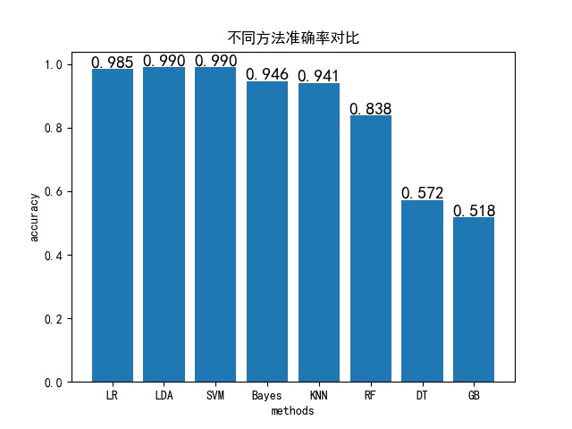
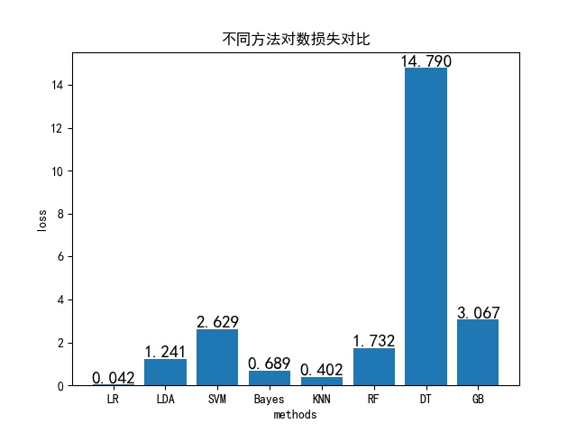
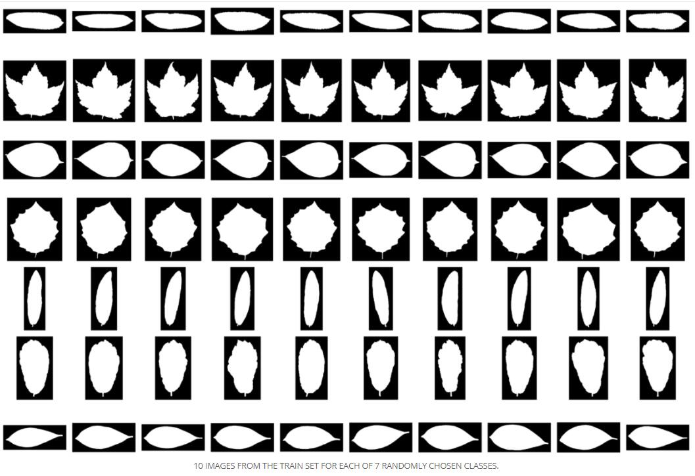
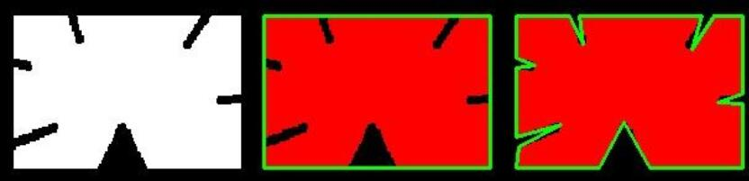
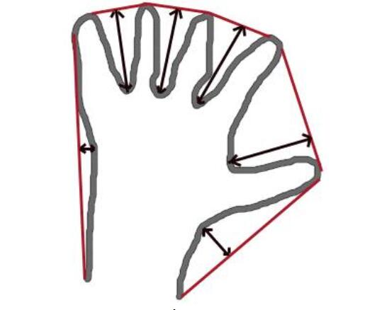
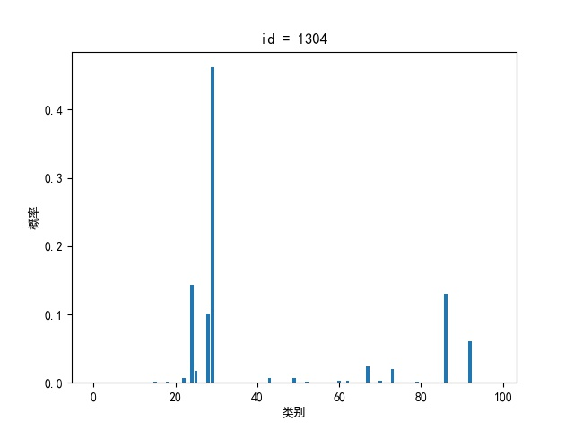
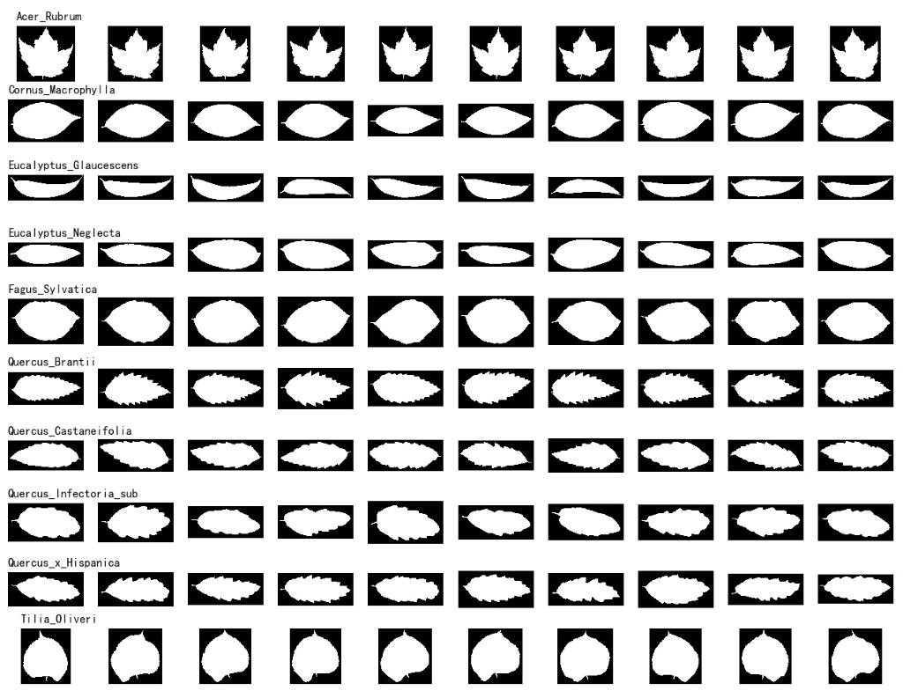

一、简介
这篇博客是针对 Kaggle 竞赛中 Leaf Classification 而写的，简单说就是一个叶子分类问题。主要涉及方法选择、特征工程、二次分类三个问题，记录下来或许对于类似的分类问题有借鉴作用，仅供参考。
二、方法选择
首先需要选择一种恰当的方法进行分类，考虑到目前我的PC性能以及训练所需要的时间，我决定从常用的统计学习方法选择一种效果较好的。利用题目已经给出的训练集，通过初步筛选，简单调参，除去明显不适合的方法，初步选择以下8种方法作为候选方法，分别为：
- 逻辑回归 LR
- 线性判别分析 LDA
- 支持向量机 SVM
- 朴素贝叶斯 Bayes
- K近邻 KNN
- 随机森林 RF
- 决策树 DT
- 梯度提升 GB
下面基于已有的训练集对这8种方法进一步分析筛选。题目中给出的训练集总共990份，我将其中600份作为训练集，390份作为测试集，分别用这8种方法进行训练并预测，得到以下结果：


由上面两张对比图可以看到，LR、LDA、SVM 三种方法准确率最高，LR、Bayes、KNN 三种方法对数损失最小，并且 LR 与其余方法之间有数量级的差距，综合考虑准确率和对数损失，我最终选择了 LR 方法，也就是逻辑回归。值得一提的是，对数损失可以一定程度上反应模型预测的置信程度，尽管 LR、LDA、SVM 三者准确率相当，但是 LR 预测结果的置信度比另外两个高很多。
三、特征工程
采用逻辑回归方法在现有特征上可以得到的对数损失为 0.02987，这是 Kaggle 评测的成绩，显然还需要进一步提取特征。特征工程应该是叶子分类中最重要的过程，我主要从以下三个方面进行。
基本特征
这是7个类别的叶子形状，如下图：
由图可见，不同类别的叶子在除去形状不同外，宽度和高度也有明显区别，据此我提取了以下五个特征：
- 宽度 width
- 高度 height
- 宽高比 width / height
- 宽高积 width * height
- 横纵方向 int(width > height)
轮廓特征
进一步，还可以利用 opencv 提取叶子的轮廓特征，关于 opencv 的具体用法看 这里 。我主要提取了以下特征：
- image moments
- area and perimeter
- centroid point
- convexity
- convex hull
- contour approximation
Image moment 用维基百科的解释就是图片像素灰度的加权平均或者多个moment的函数值，Image moments 可以描述图片的一些特殊属性，如面积、中心点等。
Convexity 就是图像的凸边性，通俗的说就是图像的形状是凹的还是凸的。
Contour approximation 就是用一个多边形去近似图像轮廓，显然如果近似得越好，多边形的顶点数通常就越多，见下图：

Convex hull 类似于 Contour approximation，不过是用凸包来包围图像轮廓，见下图：

Convex hull 可以提供的特征信息有两个，凸包顶点，轮廓的最低点到凸包的距离，由于不同叶子其凸包具有不同的顶点数，无法直接利用其顶点坐标信息，我这里从 Convex hull 提取了两个特征，凸包顶点个数以及轮廓最低点到凸包的距离之和。
图像中心点直接利用坐标即可，moments共24个值，因此从轮廓特征总共提取32个特征。
像素特征
最后一步，图片的像素信息也是可以提取特征的，这里需要利用 PCA 对图片的像素信息进行降维。最终我保留了15维的信息，也就是提取了15个特征。
通过以上3步，我总共提取了52个新的特征，加上题目原本给出的192个特征，总计244个。然后，利用逻辑回归方法重新训练模型并预测，Kaggle 评测给出的对数损失为 0.00581，这个效果在实际应用中已经足够好了。
四、二次分类
为了进一步提高成绩，我对预测结果进行了更详细地分析，发现以下信息：

这是分类器对id为1304的测试用例做出的预测结果，可以发现最大预测概率也不超过0.5，如果将最大概率对应的类别作为最终的类别，其置信程度显然是不够的，实际上在这里就是错误的。造成这个结果的原因可能是某些类别的叶子相似度太高，以致于分类器难以准确划分。因此，可以考虑对这些“不好”的结果进行二次分类，这里有三个问题，如何衡量预测结果是不好的？用哪些数据作为二次分类的训练数据？二次分类用什么方法训练模型呢？
针对问题一，我是这样考虑的。如果分类器对某一个测试用例的预测结果中，最大预测概率高于0.9或者预测概率高于0.05的类别数少于2，那么将最大预测概率对应的类别作为最终结果是可信的，反之则需要进行二次分类。通过筛选，在所有594个测试用例中，有4个用例是需要进行二次分类的，也就是说其余用例的最大预测概率均在0.9以上。
针对问题二，前一步我们已经得到了需要进行二次分类的测试用例，进一步，针对每一个测试用例找到预测概率大于0.05的类别，将这些类别对应的训练集数据作为二次分类的训练数据。统计之后，一共10个类别，总计100条训练数据。
针对问题三，用什么模型，我尝试过了上面提到的 Bayes、LDA、SVM、RF 等方法，得到的结果均不理想，最后我发现还是逻辑回归效果最好，不仅能够正确进行分类，还大大提高了最大预测概率。
下面是这10个类别对应叶子，汇总如下：
通过二次分类，得到最终的结果，测试用例总计594个，其中585个测试用例最大预测概率高于0.99，593个高于0.94，只有id为1304的用例最大预测概率为0.81。为了提高竞赛成绩，我这里使用了一个小tricky，将所有预测结果中，最大预测概率对应的类别概率置为1，其余置为0。Kaggle 评测给出最后的对数损失值为0.0000，也就是说分类器的准确率为100%。